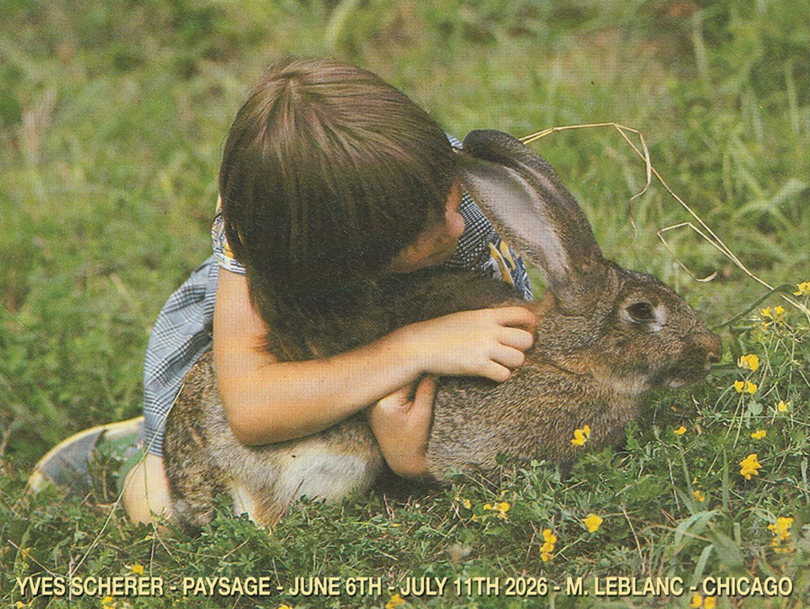

Yves Scherer: Paysage
M. LeBlanc is proud to present Paysage, Swiss-born New York based artist Yves Scherer’s second solo exhibition at the gallery.
New paintings and sculpture will comprise the exhibition.
Yves Scherer (Swiss, b. 1987 in Solothurn, CH) lives and works in New York. Scherer has exhibited internationally with recent solo exhibitions at Patricia Low Contemporary in Gstaad, Switzerland (2025); The Journal Gallery in Los Angeles, California, US (2025); Carl Kostyál in Stockholm, Sweden (2024); Peres Projects in Seoul, Korea (2024); theStable in S-chanf, CH (2023), Kunstraum Heilig Geist, Essen DE (2025), Galería Mascota, Mexico City, MX (2023), M. LeBlanc, Chicago, US (2023), The Journal Gallery, New York, US (2023), Galleri Golsa, Oslo, NO (2023), Galerie Eva Presenhuber, New York, US (2022), Galerie Guido W. Baudach, Berlin, DE (2021), Cassina Projects, New York, US (2021), Kunsthaus Grenchen, CH (2020), Kunstverein Wiesen, Germany, DE (2019), Kura, Milan, IT (2019), Basement Roma, Rome, IT (2019), and Swiss Institute, New York, US (2015). His work has been featured in a number of institutional group exhibitions, including Ja, wir kopieren! Strategien der Nachahmung in der Kunst seit 1970, Kunstmuseum Solothurn, CH (2023), Jahresausstellung, Kunstmuseum Olten, CH (2019), New Swiss Performance Now, Kunsthalle Basel, CH (2018), and New Contemporaries, Institute of Contemporary Arts (ICA), London (2013). In 2021, he participated in the Belgrade Biennale, curated by Ilaria Marotta and Andrea Baccin. Additionally, Scherer has received numerous awards including the Swiss Art Award at Art Basel in 2015. His work has entered several collections, including Farnsworth Art Museum, Rockland, US; Portland Museum of Art, Portland; Kunstmuseum Olten, CH, and Kunsthaus Grenchen, CH.